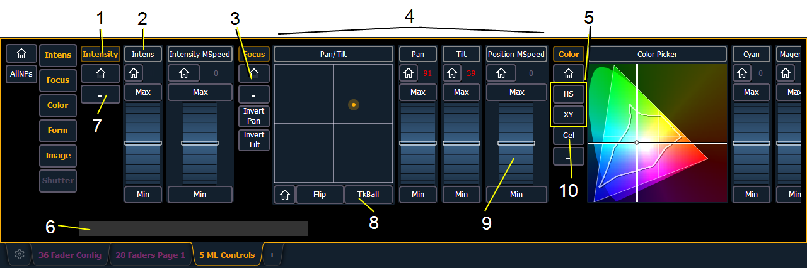

A display tool for controlling the non-intensity parameters (NPs) of multiple parameter devices is the ML Controls. The ML Controls are on Tab 5.
On Element 2, the display can be opened in the CIA by pressing the [ML Controls] button.
Note: A popup window version of the ML Controls can be opened for quick access of these controls. See Popup ML Controls
You will need to have a multi-parameter device selected to properly view this display. The display will change based on the device selected. If you have a device that only has intensity and color parameters, the ML Control display will only show intensity and color parameters.
Note: Controls available in this display will change based on the fixture selected.
When there is room, multiple rows of parameters will display, and you can scroll the display vertically.
There are category shortcut keys on the left side of the ML Controls display. Press a key to quickly access those controls.
